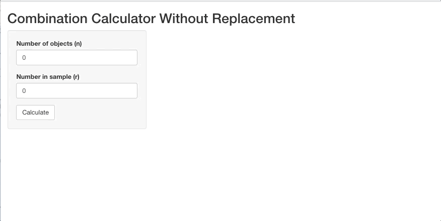
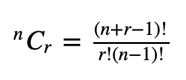

Basic Example
To get started, I’ve created a simple example to help with the understanding of when you might want to use input validation and shiny test. To illustrate these uses, I’ve created a basic combinations calculator (with replacement). For example, let’s say we want to calculate the number of possible combinations to unlock my phone given a 6 digit password with 10 possible digits (digits 0 - 9) to which the any of these possible digits can show up more than one time (i.e. combination with replacement) in my 6 digit password (e.g., the number 2 can show up more than one time in my 6-digit password). I’ve provided the code below of the simple combinations calculator app:
library(shiny)
# Define UI for application
ui <- fluidPage(
# Application title
titlePanel("Combination Calculator Without Replacement"),
# Sidebar with a slider input for number of bins
sidebarLayout(
sidebarPanel(
numericInput("objects",
"Number of objects (n)",
min = 1,
max = 50,
step = 1,
value = 0),
numericInput("sample",
"Number in sample (r)",
min = 1,
max = 50,
step = 1,
value = 0),
actionButton("go", "Calculate")
),
# Show a plot of the generated distribution
mainPanel(
textOutput("combinations")
)
)
)
# Define server logic to calculate combinations
server <- function(input, output) {
calc <- eventReactive(input$go, {
round( #round calculation
exp(lfactorial(input$sample + input$objects - 1)) / #(n + r -1)!
(exp(lfactorial(input$sample)) * exp(lfactorial(input$objects - 1))), #r!(n-1)!
2)
})
output$combinations <- renderText({
paste0("There are ", calc(), " possible combinations with replacements")
})
}
# Run the application
shinyApp(ui = ui, server = server)Which looks like this… 
So there are 5,005 possible password combinations that can unlock my phone. By the way, this is the formula for combinations with replacements (which is included in the server side of the app:

Where n >= 0, and r >= 0. If n = r = 0, then CR(n,r) = 1
Ok this is great, but as of now the app doesn’t follow the rules above: